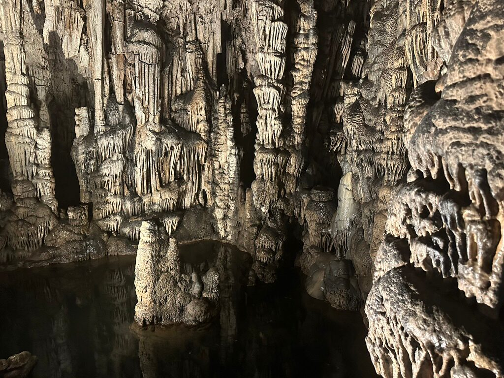

Origin
The term Loop Architecture was coined by Arif Wider and Simon Harrer at SummerSOC on , on the island of Crete.
They coined it the same day they visited the cave where, in myth, Zeus was born — hidden away by Rhea and raised in secret. Standing among the stalactites and the still water, the idea took shape: architecture should put the agentic loop first, the thing that keeps turning quietly in the dark and shaping everything around it.
